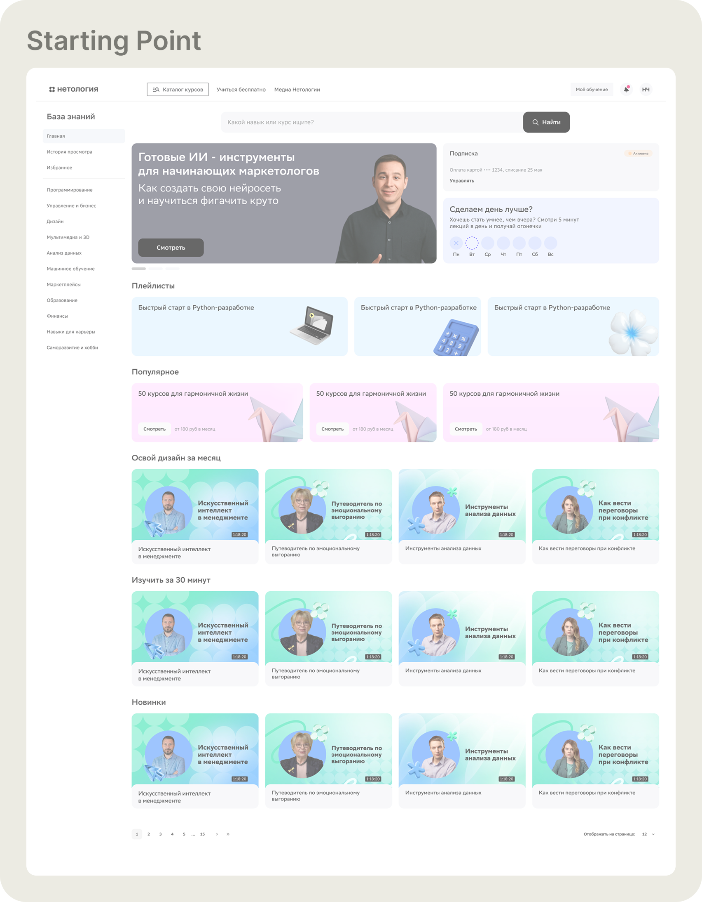
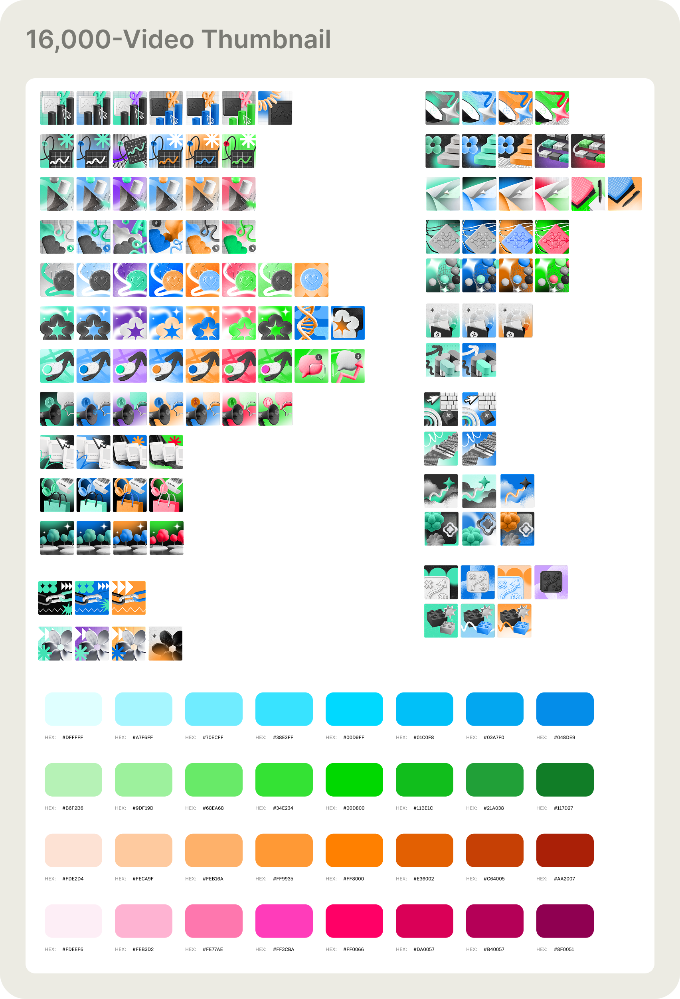

+17%
activation on the subscription video platform
Live platform — new content feed in production
Onboarding
3 questions.
That's it.
The platform finds your videos. You just answer 3 questions.
There was no onboarding. Users landed on a blank feed and had to figure out the platform themselves. We built it from zero — a 3-question flow at signup that personalizes the entire content feed before you watch a single video.
Question 1
Question 2
Question 3
3 screens. Each handles one decision. After the third answer — a personalized feed, ready to watch.
Search
The search bar existed. Nobody used it. Session recordings showed users scrolling past it without registering it was there. Three phases over 18 months — from invisible to indispensable.
Before

After

Search redesign — Phase 1 (visible) → Phase 2 (categories) → Phase 3 (full discovery panel) · +42% users finding search unaided · +32% satisfaction

Phase 2 — visual category shortcuts ranked by real query frequency. Card sorting validated the taxonomy before any design work began.
Content Discovery
16,000 videos. Every thumbnail looked identical. Users scrolled past without stopping. A 5-second test confirmed the page was visually forgettable. The fix had to scale.
Before

After


The system — 52 base images × 82 colour variations. Any combination produces a unique, on-brand thumbnail. 16,000 videos covered without a single per-video design decision.
+17%
activation — users who open the platform and start watching
Retention
Activation improved. D7 retention was 21%. Users were arriving, watching once, and not coming back. The platform had no mechanism for habit. We built one.
Streaks · Learning goals · Milestone badges · Progress summary
Achievement dashboard — visible progress, daily streaks, and completion milestones surfaced in main navigation
21% → 40%
D7 retention — users returning 7 days after activation
← Portfolio